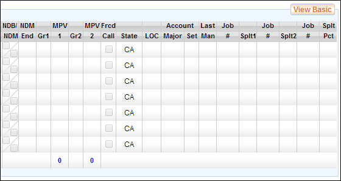

From the Basic View, click on the View Full button to access the full timecard view. The full timecard view contains the same three mini-tabs: Timecard, Box Rental, and Mileage.
The following fields are present in the timecard in the full view:
Full Timecard View
The full view contains all timecard details including expenses, reimbursements, jobs, a pay breakdown, and electronic signatures.
·
Week
Ending: The week ending date for the timecard.
·
Name: The
name of the employee.
·
Status: The
status of the timecard (i.e. Submitted, Approved, etc.).
·
Production
Name: The title of the production.
·
Production
Company: The name of the production company.
·
Occupation:
The employee's occupation.
·
Occ.
Code: The occupation code for the employee.
·
·
Loan-Out
Corp.: The Loan-Out Corporation of the employee, if applicable.
·
Federal
ID #: The federal ID number for the employee's corporation.
·
State ID
#: The state ID number for the employee's corporation.
·
·
·
Rate
Type: The rate type is either Studio
or Distant. Selecting either will populate with the
correct rate as per the Start Form.
· Soc. Sec. #: The employee's Social Security number. This number is masked so that only a portion of the number is displayed.
· Rate: The employee's hourly rate.
· Guar. Hours: The number of guaranteed hours provided to the employee.
· Account #: The account number for the employee's labor, as per the chart of accounts. Four account codes are available - Major, Detail, Set, and a Free field.
The submitted hours table in the full view displays the hours worked for each of the seven days of the work week as well as NDBs, re-rates, and employee-reported MPV information per day.
Full Timecard Submitted Hours
Table
· Date: The weekday and date for each day of the week.
· Day Type: The day type identifier for the employee's work day. (i.e. Studio, Distant, Sick, Off, etc.).
· NDB/NDM: A check indicates that the day's Non-Deductible Breakfast and/or Meal was taken. This field is reported by the employee.
· Call: The employee's call time, or work start time.
· Meal 1 Out: The time the employee started the first meal.
· Meal 1 In: The time the employee completed the first meal.
· Meal 2 Out: The time the employee started the second meal.
· Meal 2 In: The time the employee completed the second meal.
· Wrap: The employee's wrap time for the day, or work end time.
· Hours: The number of hours the employee worked per day.
· MP: The number of meal penalty violations, if any, reported by the employee.
· Re-Rate: A check indicates that the employee is reporting that they worked an occupation different from their typical role, and therefore may need to receive a different rate for that work.
After the submitted hours section, there are a number of additional columns for each work day. These fields are described below.
Additional Daily Columns

· NDB/NDM: A check indicates that the day's Non-Deductible Breakfast and/or Meal was taken. This field is used by the Accounting department to identify if these meals were taken.
· NDM End: Enter the time the non deductible breakfast ended.
· Grace 1: If grace was called for meal 1, this shows the number of minutes for the grace period.
· MPV 1: The number of meal penalty violations for meal 1, as computed by the production's payroll department
· Grace 2: If grace was called for meal 2, this shows the number of minutes for the grace period.
· MPV 2: The number of meal penalty violations for meal 2, as computed by the production's payroll department.
· Forced Call: Indicates if a forced call occurred.
· State: The state in which the employee worked on the particular work day.
· LOC: The Location Code, if applicable.
· Account/Major: If applicable, the Major Account number for the day on which the employee worked.
· Account/Set: If applicable, the Set Account number for the day on which the employee worked.
· Last Man In: The time at which the last crew member received meal 1.
The remaining fields determine if multiple jobs were worked and when. If only one job was worked by the employee for the week, these fields can be disregarded.
· Job # (1st): Shows the job number that the employee began the day working.
·
· Job # (2nd): If a split occurred during the day, this displays the job number of the second job worked that day.
·
· Job # (3rd): If a second split occurred during the day, this displays the job number of the third job worked that day.
·
The full timecard view also displays tables and fields for expenses, reimbursements, meal penalties, jobs (including jobs for split weeks and split days), hours to gross pay breakdown, and electronic signatures with audit trail. These fields are explained in more detail under the Payroll Hours to Gross Tables section, below.
The following fields are present in the box rental form in the full view:
Box Rental View
·
Amount:
The total amount for the weekly box or kit rental.
·
Inventory
is on file: Check this if the rental inventory is on file at the production
office.
·
Inventory:
List the inventory for the rental here.
· Comments: Enter any comments regarding the rental.
The following fields are present in the mileage form in the full view:
Mileage Form View
·
Date:
The date for the mileage entry.
·
Destination:
The destination driven to or from.
·
Odometer
Start/End: Optionally, input your car's odometer start and end mileage
amounts. The total miles will be
computed for you.
·
Miles:
Enter the number of miles.
·
Taxable:
Check this field if the mileage is taxable.
· Comments: Enter any comments regarding the mileage form.
Timecards in the My Timecards screen may be printed, edited, submitted, and deleted.
Timecard printing allows you to generate .pdf copies of timecards, box rental forms, and mileage forms.
Use the following steps to print one or more timecards.
1. Select a timecard.
2. Click on the Print button in the upper right corner of the screen.
The Print Payroll Documents popup appears.
Print Payroll Documents Popup

3. Select the criteria for the timecard or timecards to be printed, such as timecard range, week ending, and sort order.
4. Select which information to include in the print job.
· Timecards
· Box Rental Forms
· Mileage Forms
· Calculated Pay, which includes payroll hours to gross detail on the printed timecards
· Status - Use this dropdown to print only timecards of a certain status (Submitted, Approved, or Void)
5. Select a timecard style from the Style dropdown.
· Full Timecards
· Job Breakdown
· Simple Timecard
6. Click on the Print button.
The documents are printed as a .pdf.
Timecards may be edited by clicking on the Edit button in the upper right corner of the screen, above the timecard.
Note: The submitted hours portion of a timecard may be edited before the timecard is submitted. Once a timecard has been signed and submitted, the reported hours are locked. If edits need to be made to a crew member's submitted hours, the timecard must be rejected back to the employee.
When done editing a timecard, click on the Save button in the lower right corner of the screen to save your changes.
Use the following steps to submit a timecard for approval. Submitted timecards include associated Box Rental and Mileage Forms.
1. If you are editing the timecard, Save your changes.
2. Click on the Submit button in the lower right corner of the screen.
If the Submit button is not available, the timecard may already be submitted or you may not have permission to submit the timecard.
3. Apply your electronic signature to the timecard.
The e-signature screen will request your password and 4-digit PIN.

4. Click on the E-Sign button to complete the signature.
Note: When Timecard Approvers submit their own timecards, the submit action simultaneously submits and approves their timecards.
Once a timecard has been electronically signed, it may not be deleted. A timecard receives its first signature when it is submitted.
Only timecards that have never been submitted may be deleted. To delete a timecard, click on the Delete button in the upper right corner of the screen. If the Delete button is not present then you may not delete the timecard.
Note: When you delete a timecard, you are also deleting the associated Box Rental and Mileage Forms.
Related Topics